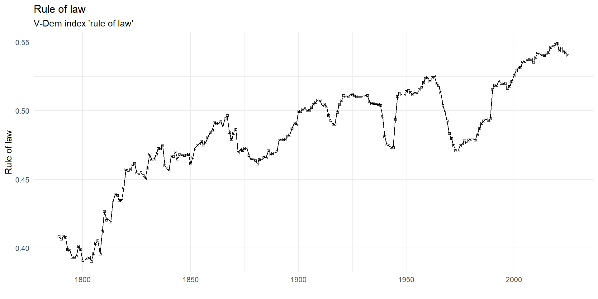
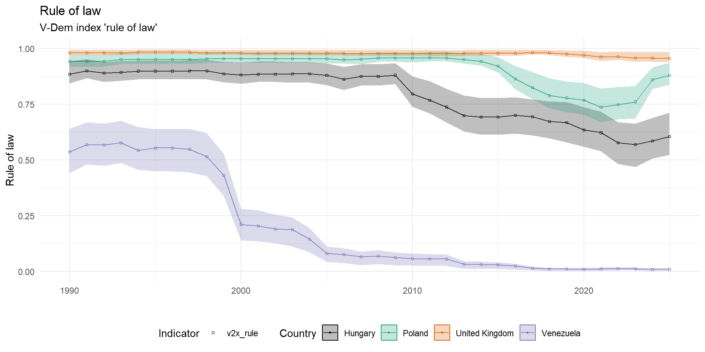
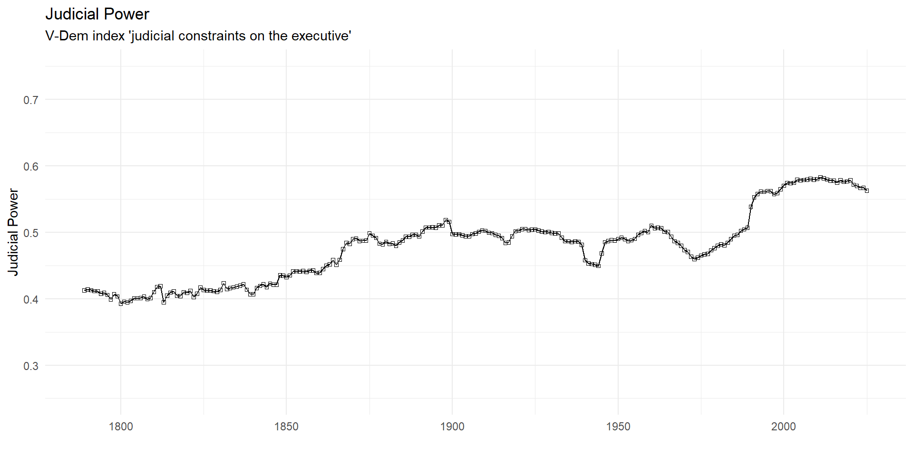
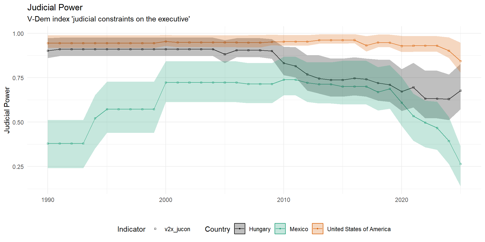

Courts in Liberal Democracy
Week 2
Why should unelected judges have the last word?
this week:
why anyone would empower a court
the political theory that frames the module: rule of law, separation of powers, judicial review
the concept doing most of the work, judicial independence
what does it take for a court to constrain a government that could simply ignore it?
Why courts get power
Why would anyone empower a court?
the creation and maintenance of powerful courts is often explained by credible commitments
by empowering courts outside their control, governments signal willingness to be bound by constitutional rules (e.g. property rights) (North and Weingast 1989)
- internationally, governments signal commitment to treaties, which new democracies use to lock in their preferences (Moravcsik 2000)
Why would anyone empower a court?
| theory | mechanism | who empowers courts | evidence |
|---|---|---|---|
| credible commitment | binding oneself reassures investors | rulers seeking investment | North and Weingast (1989) |
| insurance | courts protect tomorrow’s losers | incumbents expecting defeat | Ginsburg (2003) |
| hegemonic preservation | threatened elites lock in their values | dominant but declining elites | Hirschl (2004) |
| lock-in | tying the hands of future governments | new democracies | Moravcsik (2000) |
Why would anyone empower a court?
| theory | mechanism | who empowers courts | evidence |
|---|---|---|---|
| diffusion | copying neighbours and models | constitution drafters | Ginsburg and Versteeg (2014) |
| functionalist | complex governance needs adjudication | nobody in particular | |
| rights revolution | litigants push from below | civil society | Epp (1998) |
| policy entrenchment | parties insulate policies from elections | governing parties | Gillman (2002) |
The rule of law
What is the rule of law?
thin (formal) conceptions: law must be general, public, prospective, clear, consistent, possible to comply with, stable and actually applied (Fuller’s eight desiderata, 1964)
- says nothing about the content of the law; an unjust law can satisfy all eight
thick (substantive) conceptions add rights, democracy or social justice
- the more you pack in, the less the concept can explain
courts feature in both: as the guarantee of consistent application (thin) and as the guardians of rights (thick)
Waldron (2021) takes a procedural view: what matters is the hearing and the argument
Rule of law in comparative perspective

Rule of law in comparative perspective

Separation of powers and judicial review
Separation of powers
even in systems where judicial independence is strong, there are many formal points of contact between the judiciary, the legislature and the executive
appointment of judges
competence disputes
judicial review of administrative acts
judicial review of statutory law
Designs of constitutional review
who reviews: one constitutional court (centralized) or every court (diffuse)
- centralized: Austria, Germany, Italy, most of post-1989 Europe; diffuse: US, Argentina, Japan, the Nordic countries
when: before promulgation (a priori, France until 2008) or after (a posteriori, almost everywhere else)
how: in the abstract, detached from any case (referral by politicians), or concretely, in a dispute between parties
who can trigger it: politicians, courts, ombudsmen, individuals (constitutional complaint in Germany, Spain or Hungary; the tutela in Colombia)
how strong: strike down (strong form) or declare incompatible and leave parliament to act (weak form)
- weak form: UK Human Rights Act 1998, Canada, New Zealand
each dimension changes which cases arrive and who can be blamed for the result
Ex ante v ex post review
one type of indirect effect of judicialization is legislator moral hazard (Fox and Stephenson 2011; Ward and Gabel 2019)
- knowledge that courts will correct ill-advised policies makes legislators behave more recklessly
this type of moral hazard is more common with ex ante judicial review (Gabel et al. 2024)
The counter-majoritarian difficulty
- Bickel (1962): an unelected court striking down the acts of elected majorities
| position | core claim | who |
|---|---|---|
| rights as trumps | some questions are beyond the reach of majorities | Dworkin |
| process theory | review polices the democratic process | Ely (1980) |
| the uneasy case | review reduces rights violations, even if undemocratic | Fallon (2008) |
| the case against | legislatures should settle disagreements about rights | Waldron (2021) |
- all four are about what courts should do; most of this module is about what they do
Is the court counter-majoritarian in practice?
Dahl’s answer in 1957: the US Supreme Court rarely blocks a lawmaking majority for long, because appointments bring it back into line (Dahl 1957)
the difficulty may be smaller in practice than in theory
Judicial power and independence
Who cares about courts?
it is commonly assumed that court rulings must be complied with and followed by affected actors in virtually all constitutional systems
but what are the sources of this judicial power? why and when does anyone listen to courts?
Concept of judicial power
following Staton and Moore (2011), we can usefully identify two pillars of judicial power:
autonomy – or independence in a strict sense – or the extent to which judges’ decisions reflect their true preferences as opposed to someone else’s
effectiveness – or compliance – or the extent to which courts can compel actors to comply with adverse decisions
Concept of judicial power
| High Effectiveness | Low Effectiveness | |
| High Autonomy | Powerful Court | Ignorable Court |
| Low Autonomy | Puppet Court | Joke Court |
Judicial power in comparative perspective

Judicial power in comparative perspective

What makes judges autonomous?
judicial independence is the single most important attribute associated with modern judiciaries
yet there is disagreement on the precise content of this concept
independence to do what? independence from what or whom?
Judicial independence
the degree to which judges actually decide cases in accordance with their own determinations of the evidence, the law and justice, free from the coercion, blandishments, interference, or threats from governmental authorities or private citizens. (Rosenn 1987, 8)
What is(n’t) judicial independence
can a judge be independent when the judiciary as a whole isn’t?
does “dependence” on another judge’s or court’s decision undermine judicial independence?
What is(n’t) judicial independence
what about anticipatory judicial behaviour?
- a court may self-censor if it knows the government is likely to override its decision
free from “governmental authorities or private citizens”
rulings based on “own determinations of … the law” vs “the law”
De jure vs de facto independence
many scholars distinguish between “paper” or institutional guarantees of independence and what happens in practice (Melton and Ginsburg 2014; Hayo and Voigt 2007)
the most common de jure guarantees are:
- commitment to judicial independence, life tenure, depoliticized selection procedure, constrained removal procedure, salary non-regression
De jure vs de facto independence
there is mixed evidence on the importance of de jure guarantees of independence on de facto levels
- some find de jure independence to matter little in the aggregate (Melton and Ginsburg 2014), others find it to be the most important predictor of de facto independence (Hayo and Voigt 2007)
specific guarantees nonetheless seem to change behaviour when they change, tenure and reappointment rules in particular
De jure vs de facto independence
there is doubt whether judicial autonomy can be measured in isolation due to anticipation effects
- judges’ decisions are affected by the likelihood of compliance (Linzer and Staton 2015)
Measuring judicial independence
three families of measures:
de jure: code the constitution and statutes (tenure, appointment, removal, salary) – cheap and comparable, but paper
de facto: ask experts (V-Dem, CIRI) or read behaviour (rulings against the government) – closer to reality, but subjective or contaminated
latent: combine many noisy indicators into one estimate with a measurement model (Linzer and Staton 2015)
the available measures disagree with each other more than their users assume (Ríos-Figueroa and Staton 2014)
behaviour is a treacherous indicator: a court that never rules against the government may be captured, or may never be asked to
- and a government that expects to lose may not legislate at all
How can courts increase their power?
new courts consolidate power by not antagonizing the government for an initial period
expand jurisdiction through broad interpretation of access rules and legal domains
a common strategy is to first create the power-expanding principle without applying it in the initial case to mitigate costs of compliance (Marbury)
Why would anyone in power build a court that can rule against them?
References

POLS0113: Judicial Politics